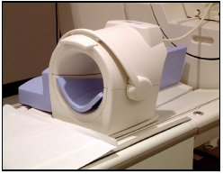
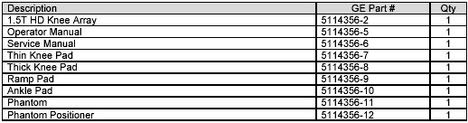
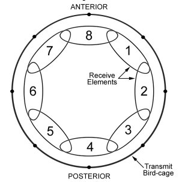
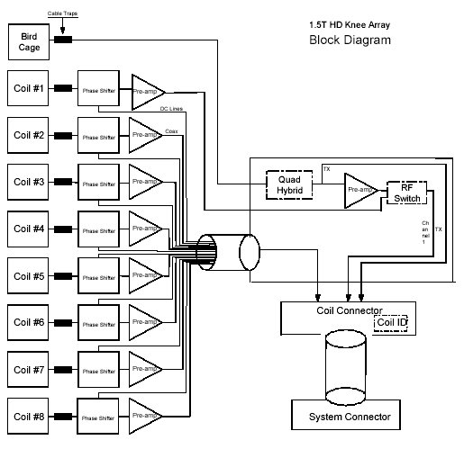

- 00000018WIA308B1F20GYZ
- id_131076283.0
- Aug 29, 2019 5:54:18 AM
1.5T HD Knee Array Coil Miscellaneous Items
INTRODUCTION
Product Identification and Shipping List
Follow this process to review the miscellaneous items for GE 1.5T HD Knee Array.


Compatibility
This coil is compatible with the following hardware configurations
Related Documentation
GE HDe/HDx 1.5T Service Methods CD-ROM
1.5T HD Knee Array Operator’s Manual, 5114356-5
Environmental Requirements
Storage Requirements
Store the coil in an air-conditioned scan room or equipment room.
To store the coil, a storage space of 45.7 cm/18.0 in (width) x 72.4 cm/28.5 in (depth) x 42.7 cm/16.8 in (height) is required.
Dimensions
Coil: 45.7 cm x 72.4 cm x 42.7 cm (18.0 in x 28.5 in x 16.8 in)
Phantom: 12.1 cm x 12.1 cm x 24.2 cm (4.75 in x 4.75 in x 9.5 in)
Phantom Positioner: 17.8 cm x 17.8 cm x 19.9 cm (7.0 in x 7.0 in x 7.83 in)
Weight
Coil: 8.56 Kg (18.9 lb) )
Phantom: 5.0 Kg (11.0 lb)
Phantom Positioner: 1.5 Kg (3.3 lb)
Theory of Operation
The 1.5T HD Knee Array consists of 8 receive elements, and a quad birdcage transmit coil. Each receive element is comprised of a loop arranged azimuthally around the knee. Each loop is approximately 45° in azimuthal extent. The center of Loop #1 is located 45° rotated in the clockwise direction (as viewed from the head) with respect to the center of the patella. Each of the next seven loops is rotated clockwise by 45° successively. During transmit, each receive loop is decoupled with both passive and active decoupling, with an additional active preamp protection network. During receive, the transmit bird-cage is decoupled and signals from elements 1 – 8 are directed to separate ultra-low-input impedance preamp modules placed directly at the output of the loop. These preamp modules provide additional element decoupling. In addition, the 1.5T HD Knee Array allows receiving with the bird-cage coil to obtain a uniform signal from the imaging volume.

